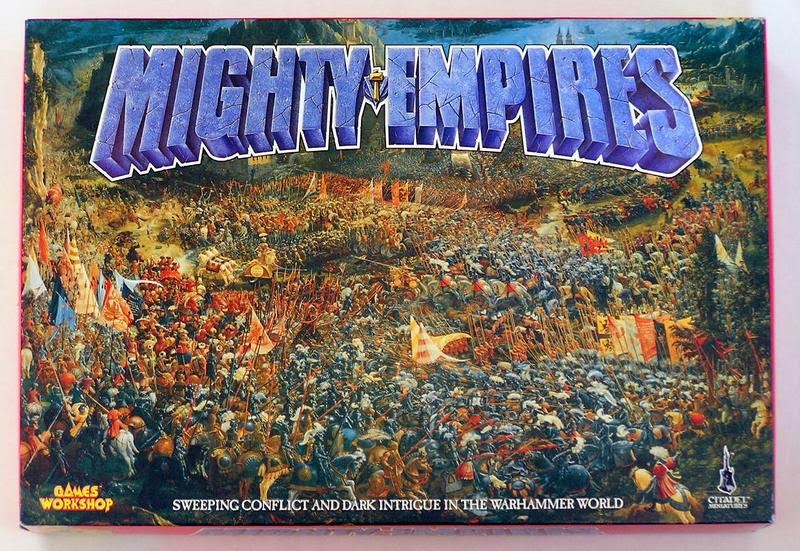
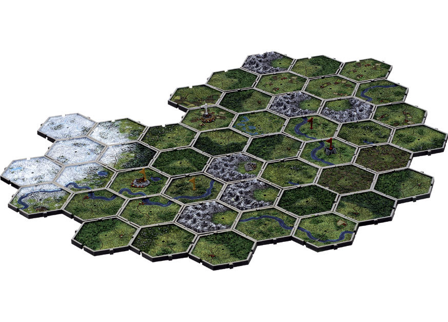

Or: how a group of geographically inconvenient hobby obsessives digitised a thirty-five-year-old hex campaign system and ended up building something rather good.
The Sacred Texts
Let's be absolutely clear about the source material, because this matters more than you might expect and will explain several decisions that otherwise look eccentric.
Mighty Empires (1990) is the original boxed campaign system — cardboard hex tiles, subsistence values, brutal winters, armies marching to their doom across terrain that actively hates them. Simple. Elegant. Foundational. The income system and economic philosophy of this tool come directly from this edition, and we treat it as the word of whatever war god is appropriate to your faction.
The General's Compendium (2003) is, without any reservation whatsoever, the finest hobby book Games Workshop has ever produced. Banner rules, fortification rules, retreat and scatter mechanics, Defended Obstacles, full campaign structure — all of it comprehensively laid out and clearly written. If you do not own a copy, haunt eBay with the determination of a particularly motivated Vampire Count. Pay whatever they're asking. It is worth it. The campaign rules in this tool come from this edition.
Mighty Empires (2007) also exists. We are not using it. It has plastic tiles and ideas about how campaign play should work that we regard with polite suspicion. The 1990 rules say what they say, the General's Compendium says what it says, and between the two of them we have everything we need.

Mighty Empires (1990) © Games Workshop. The sacred text.
Warhammer: The Old World is what we're actually playing on the tabletop. Everything above is the campaign wrapper. The battles themselves are TOW matched play, from which we have borrowed exactly one thing: the baggage train secondary objective. More on that shortly.
The Problem
Six players. Various corners of the United Kingdom. One campaign. The traditional solution — a WhatsApp group, a hand-drawn map, and a spreadsheet that everyone argues about — has never worked and never will. What this called for was a purpose-built web application with the rules properly baked in from the start, designed around how Mighty Empires actually works rather than how it is convenient to assume it works.
The tracker is a React web application living on Cloudflare Pages, running entirely in the browser, built to let a group of players manage a Mighty Empires campaign without needing to be in the same room, city, or indeed time zone. The map is the centrepiece: a procedurally generated hex grid with terrain types, rivers, bridges, roads, and Points of Interest, with every hex clickable and every territory ownable. Banners deploy, move, fight, and scatter. Income rolls in Winter. History accumulates in the log.
What follows is the story of the design decisions behind it — what we kept from the source material, what we adapted, what we invented, and why.
The Map
The centrepiece is a procedurally generated hex map. Terrain types are colour-coded: rolling Lowlands in green, dark brooding Forests, dusty Highlands, coastal blues, fetid Swamps. Rivers snake across hexes as overlays, with bridges where roads cross them. Every hex has a grid reference label (A1, G7, that sort of thing), a lore description, and potentially a Point of Interest.

The hex tiles in action. Rivers, mountains, lowlands — every tile a decision.
Players can claim territories, assign settlements from Village up to Capital, fortify their holdings, and deploy banners. Click any hex and the sidebar fills with its full details — who owns it, what the income is, what bonuses apply to battles fought there, and whether anyone's currently marching an army through it.
The Movement Phase
Each season, players issue orders to their banners: Move, Hold, Fortify, Recover, Raze. Moves require a target hex. Orders are submitted through the player tab and locked before the GM can advance the turn.
When the GM hits Advance Turn, the tracker throws up the Movement Phase modal first, having already rolled terrain tests for every banner with a pending Move order. Forest? 3 or better. Highland? 4 or better. River crossing — whether a River Valley hex or a river overlay on any other terrain? 5 or better, unless there's a bridge, in which case crack on. Fail the test and the banner is blocked, its Move order converted to Hold. Pass and the banner relocates.
Beastmen may reroll failed terrain tests — they are at home in the wild places of the world and regard difficult ground as a mild inconvenience at best. Greenskins can declare a Forced March, rolling separately with the possibility of extending to two hexes, settling for one on a middling result, or — on a 1 — declining to move at all because someone just started a fight in the back ranks and it's spreading. Dwarfs and Chaos Dwarfs simply walk through Highland tiles because they rather live there.
When two enemy banners both receive Move orders that would take each into the other's vacating territory, the Don't Pass in the Night rule applies. Both players roll a D6. The higher score moves; the lower stays and fights. Same score: nobody moves. High Elves automatically win this roll against any non-High Elf opponent, which is extremely on-brand.
Income in Our System
Income in Mighty Empires is collected once, going into Winter, after the last marching season closes. It is not automatic. Each territory requires a D6. Roll 2 or better and you collect the territory's full Subsistence Value. Roll 1 and the harvest was poor, the coffers stay empty, and the tax collectors came back empty-handed. This single mechanic — borrowing the subsistence roll directly from ME 1990 — produces the economic tension the campaign needs. A large empire rolling badly in a hard Winter is suddenly very worried about whether it can pay its scout banner upkeep.
The Winter Income modal lists every player's territories with individual Roll D6 buttons, coloured results (green for success, red for failure and mild despair), a running total, and a Roll All Remaining button for when the novelty of individual rolls has worn off. The GM cannot advance the turn until every territory has been rolled. No skipping. No averaging. Every tile matters.
Fortify: Two Different Things, Clearly Labelled
The tracker surfaces two completely separate concepts under the word "fortification" and is careful to keep them distinct.
Permanent fortifications are structural — castles, city walls, the kind of thing that took decades to build and does not vanish because a general moved his army somewhere else. These are set at campaign start and persist until those angry Northmen raze the hex to the ground.
The Fortify order is a banner action. Your army spends a turn digging earthworks, conscripting locals, and constructing hasty barricades. Both this and any permanent fortification already on the territory grant +200 points to the defending army list and access to the Defended Obstacles table — before deployment, the defender rolls D6 and brings on a piece of terrain that benefits them: a hill, a wall, a watchtower, earthworks. The difference is that permanent fortifications are simply there, requiring no action; the Fortify order is how an army in the field earns those same benefits from scratch.
The Fortify state persists as long as the banner remains in the territory and in control of it. The moment the banner departs or the territory changes hands, the defences collapse. Mud fills the trenches. The locals make off with the timber.
The Recover Order
A banner with a Recover order on a Razed territory rolls D6 at turn end. 4 or better and the territory is restored, the razed status cleared, and the settlement returned to its previous tier. A roll of 1 always fails regardless of modifiers. Each consecutive turn spent recovering in the same territory adds +1 to subsequent rolls — representing the army properly digging in, getting the fields working, and rebuilding something worth having.
Agents: Hired Help With Consequences
The agent system covers the Winter phase and takes its inspiration from ME 1990's espionage section, which features assassins with entertainingly catastrophic failure states. The core design principle: every agent has a downside on a 1. Hiring help in the Old World is not a risk-free endeavour, and the dice know this.
The Spy reveals an opponent's full army list and magic items before your next battle against them this year. On a 1, the spy is turned and your opponent may secretly redeploy one unit after your deployment. You have paid 2 gold to give your opponent a tactical advantage. This is embarrassing and should be.
The Assassin targets an enemy agent. Roll 4+ to eliminate them before they act. On a 1, the assassin is caught and killed, and the targeted agent acts as normal. 4 gold, no result, one corpse.
The Agitator makes one enemy tile harder to collect — the opponent needs 4+ instead of the usual 2+. On a 1, the Agitator is caught, made a very public example of, and that tile generates +1g bonus for your opponent this Winter. There is something deeply satisfying about the possibility of directly funding your enemy's war chest through your own incompetence.
The Merchant is the only mechanism for carrying gold between years. All unspent gold is lost at Winter's end — civil projects, artistic patronage, general housekeeping, and what the ME 1990 source material calls, with cheerful vagueness, "frivolous items of expenditure." The Merchant takes between 1 and 3 gold as an investment. Roll a D6: 1-2 lose everything, 3-5 bank exactly what you put in, 6 bank it plus a bonus gold. One slot per player per Winter. This single rule produces more interesting decisions per Winter phase than almost anything else in the system, because every player is constantly weighing spend versus save, and the Merchant is never as reliable as you'd like.
The Wandering Sage grants one re-roll — either on magic item availability, or on either equinox spell table. Two entirely different uses from one hire. We added the equinox re-roll during design when it became clear that rolling a 1 on the Autumn table and getting Blight Crop redirected onto your own best tile was genuinely distressing.
Magic Items and Artefacts
Four tiers, scaling cost, availability that punishes overconfidence.
- Minor (0-25 pts): 2g, automatic. Something picked up at a market.
- Lesser (26-50 pts): 3g, needs a 3+.
- Greater (51-75 pts): 4g, needs a 5+. Rare, expensive, genuinely uncertain.
- Artefact (76+ pts): A two-year project.
On a failed availability roll, the gold is lost. The item was unavailable, the source dried up, the courier was waylaid. This is the Old World.
Artefacts require more than gold. A player commissions one in Winter for 5g — non-refundable, representing months of preparation, sourcing materials that don't exist in most markets, possibly negotiating with something unpleasant. Over the following campaign year, the player must achieve one of four empowerment conditions:
- Magic Weapon: Win a Major Victory or better in battle
- Magic Armour: Capture an enemy Baggage Train
- Arcane Item: Successfully cast an Equinox spell
- Talisman: Have your General survive a Crushing Defeat
Three chances across three campaigning seasons. Miss all three and the commission fails, the 5g is gone, and next Winter begins with significantly less gold and a certain sense of cosmic disappointment. The empowerment conditions interact interestingly with the broader campaign: the Arcane Item condition creates a reason to attempt an Equinox spell even without an obvious target. The Talisman condition is a deliberate feedback loop — lose badly enough and the campaign hands you a path to ward saves. It takes the sting out of a catastrophic defeat without removing the consequence entirely.
Equinox Magic: Getting the Source Right
Magical power crests twice per year, at the Spring and Autumn equinoxes. An army banner Holding in a City or Capital during the relevant phase may attempt to cast — the gate is positional, not personnel. Every army in the Old World has something capable of channelling power at a nexus point. A wizard, a runesmith, a battle priest, a shaman. It doesn't matter. What matters is where you are and whether you can afford to stay there.
The casting procedure is borrowed directly from ME 1990 and adapted for a six-entry seasonal table. Roll a D6 to determine the spell — the Wandering Sage allows one re-roll. Declare a target tile within 12 hexes. Roll 2D6. If the result equals or exceeds the distance, the spell lands on target.
If the roll falls short, the spell fires anyway, but the opponent chooses which of your tiles is affected. The power was there. The control was not. This creates genuine tension at every equinox: target the distant tile for maximum impact and risk handing your opponent a free Blight Crop on your best City, or aim closer and settle for something modest.
Baggage Trains: Borrowed From the Tabletop
Warhammer: The Old World matched play has baggage trains as secondary objectives — a secondary board element that creates a second thing to fight over without complicating the primary game. We adapted this for the campaign layer.
A baggage train costs 3 gold per year, is assigned to a specific banner, and grants one of three in-game bonuses per battle: D3 re-rolls on Leadership, Break, or Flee tests; a modifier on scenario selection; or a modifier on going first. The choice is made per battle, representing the high morale and reliable supply of a well-provisioned army.
If the carrying banner loses, the train is captured: the opponent gains 2 gold in Winter and the train is destroyed. The connection to the Artefact system is intentional. The only way to empower Magic Armour is to capture a baggage train. Fielding one creates an opportunity for your opponent. Both players know this. Both have to decide what to do about it. The tracker flags which banner carries the train, because otherwise someone will forget and there will be an argument. There is always an argument.
Battles
Base 1,500 points, modified by Fortification, HQ status, Mutual Support, Scout Banner support, POI bonuses, and the Baggage Train. Any army must still be a legal list at the modified value — Core minimums, character limits, Rare allowances, all of it.
After the battle: the winner holds the territory and chooses to Hold or Pursue. Pursuit counts as the winner's Move order for the next turn and forces another battle if the retreating banner is still there. This must be declared before the next turn advances — the tracker records it.
The loser retreats to an adjacent friendly territory with no terrain test. If Massacred, or if no friendly adjacent territory exists, the banner is Scattered: off the map until the End of Campaign Turn Phase, where it may be reformed at HQ if the realm can support it.
The Winter Spending Window
Winter is where campaigns are won and lost, and it deserves a proper interface. The Winter phase gives each player their own spending window — accessible from the player tab — where they manually enter gold collected from their income rolls and log expenditure across agents, magic items, artefact commissions, scout banner upkeep, baggage train purchases, and Merchant investments. All unspent gold is lost when Winter ends. The window makes the decision visible: here is what you have, here is what it costs, here is what you will lose.
The Campaign Log
The log panel records everything: orders issued, terrain tests rolled, territories claimed, battles declared, income collected, gold spent. Every turn advance leaves a snapshot in local storage. At the end of each season the group has a complete record — exportable as a formatted text file, map SVG, or full campaign JSON backup. The dice roller in each player tab publishes results to the log with player attribution, so there is a shared record of who rolled what and when. This is extremely useful when someone's Assassin allegedly succeeded and no one can remember whether that was a five or a three.
A Note on Philosophy
There is a particular kind of rules document that tries to anticipate every edge case and ends up being twelve thousand words of increasingly baroque conditionals. This is not that. The General's Compendium already wrote the rules. The job here was to decide which rules to use, add the pieces that were missing, and build a tool that implements them clearly enough that six players distributed across the United Kingdom can run a campaign without the GM having to answer the same question fourteen times.
What we've ended up with is a hybrid system: the economic model from ME 1990, the campaign structure and battle rules from the General's Compendium, and a handful of additions — equinox magic properly adapted from the source, a tiered artefact system, agents with genuine downside risk, and baggage trains borrowed from the game we're actually playing on the tabletop — that feel as though they have always been there.
We've also got a tracker good enough to run the campaign and a rules reference complete enough to resolve disputes without interpretive guesswork.
May your dice be kind, your rivers bridged, and your general positioned in a City well before the Autumn equinox.
Mighty Empires Campaign Tracker is a React web application. Campaign rules based on Mighty Empires (1990) and The General's Compendium (2003). Battles played using Warhammer: The Old World. No responsibility accepted for inter-player diplomatic incidents arising from the Agitator mechanic.